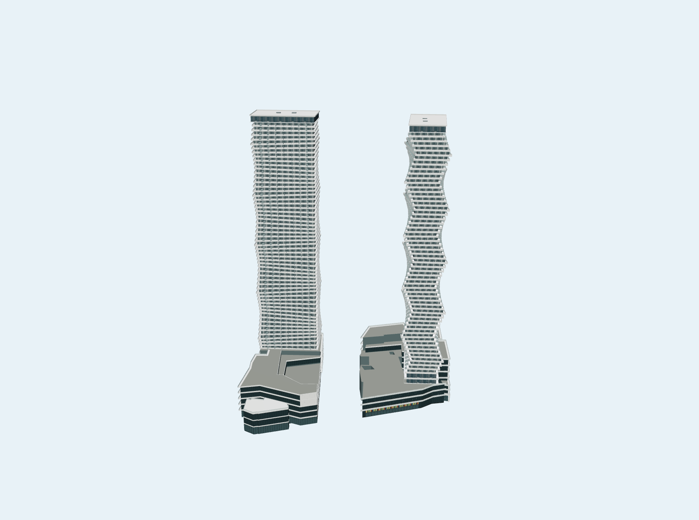

← All buildings
Buildings
I modelled these buildings from city data, architectural drawings and photographs. For some, the teams behind them helped me check the details.
Featured buildings
Approximate model · Not as-built
How to explore the model
Scroll normally over the preview. Choose “Interact with model” to rotate with one finger or move and zoom with two. Keyboard: arrows to rotate, +/− to zoom, Home to reset, Escape to leave.